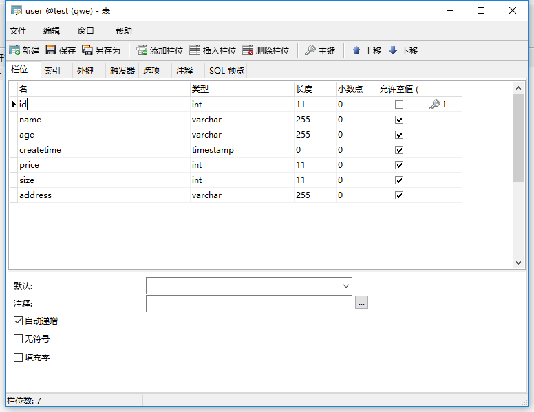
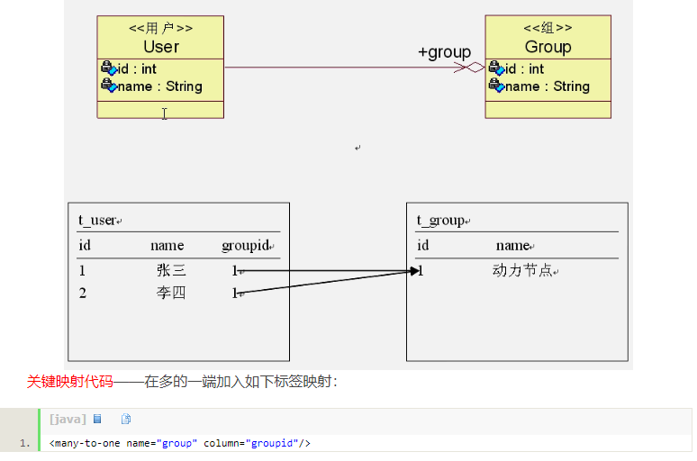
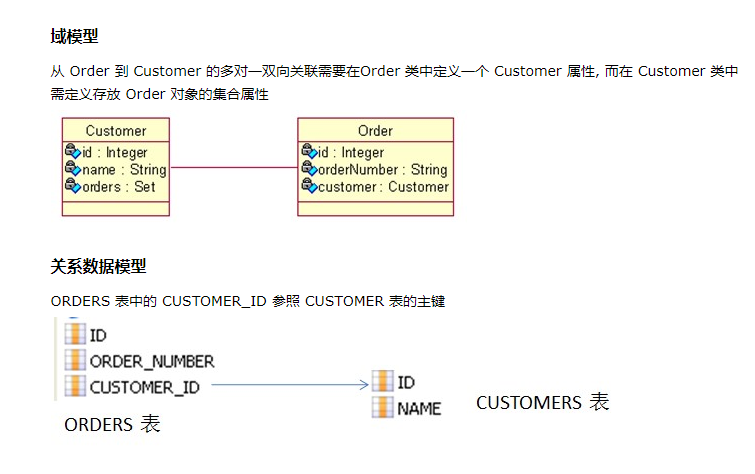
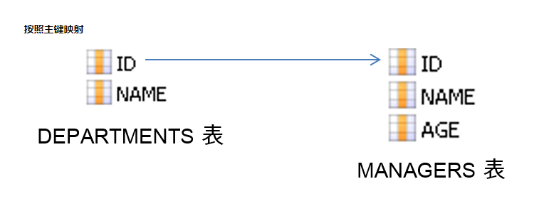
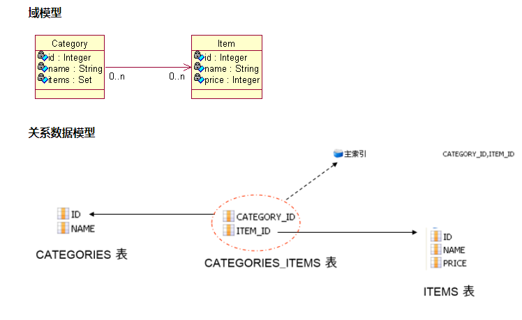
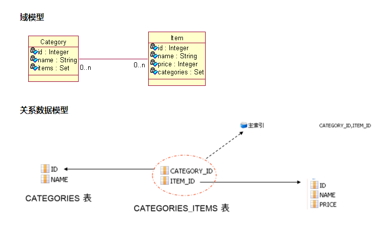

- Hibernate
Hibernate
概述：
一个开放源代码的对象关系映射框架，它对JDBC进行了非常轻量级的对象封装，它将POJO与数据库表建立映射关系，是一个全自动的orm框架,hibernate可以自动生成SQL语句，自动执行，使得Java程序员可以随心所欲的使用对象编程思维来操纵数据库。
第一个Hibernate的CRUD 例子
工程目录：

①：准备数据库环境
在test数据库中创建user表.
②：准备Hibernate 环境
-
创建工程项目文件。
-
到官网上，下载Hibernate 文件（目前最新的稳定版为5.2.12）
-
导入hobernate 需要的jar包到工程文件的classpath 下。
需要的jar包所在是路径：hibernate-release-5.2.12.Final\lib\required -
导入mysql的jdbc驱动包到工程文件的classpath下：
mysql-connector-java-5.1.42-bin.jar
③：创建Hibernate 配置文件
hibernate.cfg.xml
<?xml version='1.0' encoding='utf-8'?> <!DOCTYPE hibernate-configuration PUBLIC "-//Hibernate/Hibernate Configuration DTD 3.0//EN" "http://www.hibernate.org/dtd/hibernate-configuration-3.0.dtd"> <hibernate-configuration> <session-factory> <!-- 数据库连接信息 --> <property name="connection.url">jdbc:mysql://localhost:3306/test</property> <property name="connection.username">root</property> <property name="connection.password">123456</property> <property name="connection.driver_class">com.mysql.jdbc.Driver</property> <!-- SQL dialect（方言）， dialect和Mysql的版本不匹配,这段代码是MySQL 5.0以前的版本，下面是MySQL 5.0后的版本 <property name="dialect">org.hibernate.dialect.MySQLInnoDBDialect</property> --> <property name="dialect">org.hibernate.dialect.MySQL5InnoDBDialect</property> <!-- 执行操作时，是否在控制台打印sql语句--> <property name="show_sql">true</property> <!-- 是否 对在控制台打印的sql语句进行格式化 --> <property name="format_sql">true</property> <!-- 指定程序运行时，是否在数据库中自动生成数据表 --> <property name="hbm2ddl.auto">update</property> <!-- 告诉hibernate 去哪找 映射文件（默认后缀为 .hbm.xml文件） ，resource： 表示路径为目录结构形式--> <mapping resource="com/hbm/xml/User.hbm.xml" /> </session-factory> </hibernate-configuration>
④：创建持久化类（实体类）
User.java
package com.entity; public class User{ private Integer id; private String name; private Integer age; public User(){} public User(String name, Integer age) { super(); this.name = name; this.age = age; } public Integer getId() { return id; } public void setId(Integer id) { this.id = id; } public String getName() { return name; } public void setName(String name) { this.name = name; } public Integer getAge() { return age; } public void setAge(Integer age) { this.age = age; } @Override public String toString() { return "User [id=" + id + ", name=" + name + ", age=" + age + "]"; } }
⑤：创建对象——关系映射文件（Object Relational Mapping,ORM）
注意：映射文件的扩展名：" .hbm.xml "User.hbm.xml
<?xml version="1.0" encoding="UTF-8"?> <!DOCTYPE hibernate-mapping PUBLIC "-//Hibernate/Hibernate Mapping DTD 3.0//EN" "http://hibernate.sourceforge.net/hibernate-mapping-3.0.dtd"> <hibernate-mapping> <class name="com.entity.User" table="user"> <!-- name 为持久化类的全类名 --> <id name="id" type="java.lang.Integer" column="id"> <!-- 指定主键的生成方式，native：使用数据库本地的方式--> <generator class="native"/> </id> <property name="name" type="java.lang.String" column="name"></property> <property name="age" type="java.lang.Integer" column="age"></property> </class> </hibernate-mapping>
⑥：test
hibernate_test.java
package com.test; import static org.junit.Assert.*; import java.util.List; import org.hibernate.Session; import org.hibernate.SessionFactory; import org.hibernate.Transaction; import org.hibernate.boot.MetadataSources; import org.hibernate.boot.registry.StandardServiceRegistry; import org.hibernate.boot.registry.StandardServiceRegistryBuilder; import org.hibernate.cfg.Configuration; import org.junit.Test; import com.entity.User; public class hibernate_test { private static SessionFactory sessionFactory=null; private static Session session=null; /* * 通过静态代码块创建Session对象 * */ static{ /* * 1.创建Configuration对象，调用configure()方法，加载 hibernate.cfg.xml配置文件. * 注意：configure()方法 会默认加载 名字叫 hibernate.cfg.xml 的文件。 * 所以配置文件的名字最好叫hibernate.cfg.xml * 2.创建StandardServiceRegistry 对象，hibernate的所有配置与服务都需要在该对象中注册才能有效。 3.创建SessionFactory对象。 4.创建Session对象 * * */ Configuration cfg = new Configuration().configure(); sessionFactory=cfg.buildSessionFactory(); /*这种生成 sessionFactory 的方式也可以： * * StandardServiceRegistry serviceRegistry=new StandardServiceRegistryBuilder().configure().build(); SessionFactory sessionFactory=new MetadataSources(serviceRegistry).buildMetadata().buildSessionFactory(); * * */ session=sessionFactory.openSession(); } /* * 插入数据 * */ @Test public void insert(){ /* * 1.创建Configuration对象，调用configure()方法，加载 hibernate.cfg.xml配置文件. * 注意：configure()方法 会默认加载 名字叫 hibernate.cfg.xml 的文件。 * 所以配置文件的名字最好叫hibernate.cfg.xml。 * 2.创建StandardServiceRegistry 对象，hibernate的所有配置与服务都需要在该对象中注册才能有效。 * 3.创建SessionFactory对象。 * 4.创建Session对象 * 5.开启事务 * 6.执行插入操作： * 7.提交事务 * 8.关闭session，sessionFactory * */ Transaction transaction=session.beginTransaction(); //开启事务 User user=new User("xiaoming",44); session.save(user); //插入数据 transaction.commit(); //提交事务 session.close(); sessionFactory.close(); } /* * session.update(user); 默认以id来更新数据，如果对象没有id值（或id=null,或数据库没有该id值）,则无法 更新 * */ @Test public void update(){ Transaction transaction=session.beginTransaction(); //开启事务 User user=new User("xiaoho",11); user.setId(8); session.update(user); transaction.commit(); session.close(); sessionFactory.close(); } /* * session.delete(user); 默认以id来删除数据，如果对象没有id值（或id=null,或数据库没有该id值）,则无法删除 * */ @Test public void delete(){ Transaction transaction=session.beginTransaction(); //开启事务 User user=new User(); user.setId(1); session.delete(user); transaction.commit(); session.close(); sessionFactory.close(); } /* * 查询操作，不需要提交事务 * * session.get(User.class, 7); //参数1:需要查询的类对应的clas文件 , 参数2： 查询条件（唯一标识，id值） * */ @Test public void selectone(){ User user =session.get(User.class,7); session.close(); sessionFactory.close(); System.out.println(user); } /* * 多条查询，不需要提交事务。 * */ @Test public void selectAll(){ /* * 通过hibernate提供的查询语句进行查询 * 此处Users是类名，而不是数据库的表名, select * 不写 * */ String hql = "from User"; //执行hql语句 List<User> user_list=session.createQuery(hql).list(); for (User user : user_list) { System.out.println(user); } session.close(); sessionFactory.close(); } }
⑦：解析：
在Hibernate的配置文件 hibernate.cfg.xml 中：
<!-- 指定程序运行时，是否在数据库中自动生成数据表 --> <property name="hbm2ddl.auto">update</property>
name属性：有4种取值。create , update, create-drop, validate。
- create
会根据.hbm.xml的文件来生成数据表，但是每次运行都会删除上一次的表，重新生成表，即使表之前之后没有任何改变。
- create-drop:
会根据 .hbm.xml 文件生成表，但是SessionFactory 一旦关闭，表就自动删除。
- update（最常用）：
会根据 .hbm.xml 文件生成表，若 .hbm.xml 文件和数据库的对应的数据表的结构不同，Hibernate 会更新数据表的结构，但不会删除之前存在的数据或结构。
- validate：
会与数据库的表进行比较，若 .hbm.xml文件的列在数据表中不存在，抛出异常。
缓存：
缓存是关于应用程序性能的优化，降低了应用程序对物理数据源访问的频次，从而提高应用程序的运行性能。
Hibernate的缓存分为一级缓存，二级缓存。
一级缓存（session级别，默认缓存）：
一级缓存是 Session 级别缓存并且是一种强制性的缓存。它随session的创建被创建，随session的销毁被销毁。不同的session之间无法共享一级缓存。
当程序使用session的加载持久化对象时。session首先会根据加载的数据类和唯一的标识（id）在缓存中查找曾经是否执行过的例子。若存在，则把曾经的例子作为结果返回，若不存在，session会在二级缓存中查找。若还不存在，则session加载新的持久化对象（session直接访问数据库）。
/* * 查询操作，不需要提交事务 * * session.get(User.class, 7); //参数1:需要查询的类对应的clas文件 , 参数2： 查询条件（唯一标识，id值） * */ @Test public void selectone(){ User user =session.get(User.class,7); System.out.println(user); User user2 =session.get(User.class,7); System.out.println(user2); session.close(); sessionFactory.close(); }

查询了两次数据库，但只打印了一次sql 语句。说明，第二次查询，是调用了一级缓存中之前查的结果。
二级缓存（SessionFactory 级别，不是默认的需要开启）：
当session加载持久化对象在一级缓存找不到匹配的缓存实例时，session会向二级缓存查找该实例对象。若找不到，session直接访问数据库。
由于Hibernate 本身没有提供二级缓存的实现方式。所以需要引入第三方的插件来实现Hibernate的二级缓存。
这里以EHCache 作为Hibernate的二级缓存：
Hibernate 配置文件：
1.配置C3P0数据源连接池：
- 导入C3P0jar包，加入到类路径中：
一般在你下载的Hibernate的文件夹的
hibernate-release-5.2.12.Final\lib\optional\c3p0
c3p0-0.9.5.2.jar
hibernate-c3p0-5.2.12.Final.jar
mchange-commons-java-0.2.11.jar
- 添加配置文件信息：
hibernate.cfg.xml
<!-- 配置C3P0数据库连接池
hibernate.c3p0.max_size: 最大连接数
hibernate.c3p0.min_size： 最小连接数
c3p0.acquire_increment： 当连接池里面的连接快用完的时候，C3P0同一时刻内可以同时获取的新的连接数的数量
c3p0.idle_test_period： 每隔2秒检查连接池里的连接对象是否超时，若超时，会有专门的线程每隔一段时间销毁超时的连接对象.
c3p0.timeout: 连接数多长时间没有使用后，被销毁
c3p0.max_statements: 缓存的Statement的最大数量
-->
<property name="hibernate.c3p0.max_size">10</property>
<property name="hibernate.c3p0.min_size">5</property>
<property name="c3p0.acquire_increment">2</property>
<property name="c3p0.idle_test_period">2000</property>
<property name="c3p0.timeout">2000</property>
<property name="c3p0.max_statements">10</property>
2.配置批量操作（CRUD）的属性（主要适用于Oracle数据库）：
hibernate.cfg.xml
<!-- 这两个属性主要适用于Oracle数据库， Mysql数据库不支持fetch_size特性 hibernate.jdbc.fetch_size: 该属性 设定jdbc的Statement 读取数据的时候每次从数据库取出的记录条数。 例如：当一次性查询10000条数据时，一条一条的查询，内存消耗小，但速度慢。 而100条100条的查询，速度快，但内存消耗大。因此取合适的值100。 hibernate.jdbc.batch_size： 对数据库进行批量删除，更新，插入时的每个批次的数量大小。 --> <property name="hibernate.jdbc.fetch_size">100</property> <property name="hibernate.jdbc.batch_size">50</property>
Hibernate 映射文件（*.hbm.xml）:
映射文件的扩展名： “ .hbm.xml ”
1. 概述：
一个对象/关系型映射一般定义在 XML 文件中。映射文件指示 Hibernate 如何将已经定义的类或类组与数据库中的表对应起来。
2.映射文件常用属性：
<?xml version="1.0" encoding="UTF-8"?> <!DOCTYPE hibernate-mapping PUBLIC "-//Hibernate/Hibernate Mapping DTD 3.0//EN" "http://hibernate.sourceforge.net/hibernate-mapping-3.0.dtd"> <hibernate-mapping> <!-- <hibernate-mapping>标签： package="com.entity" 属性 :指定包前缀 指定持久化类所在的包名 。这样之后class子标签中的name属性就不必使用全限定性的类名 ----------------------------------- -- <class>标签：使用class元素表示一个持久化类（实体类）。注意：可以有多个<class>标签，对于多个映射文件，但建议一个持久化类对应一个映射文件。 -- name="com.entity.User" ：表明持久化类的全类名，如果<hibernate-mapping>标签的package属性已经指明了包名，则可以少写代码； -- table="user" ：对应数据库表名，默认持久化类名作为表名； -- dynamic-update="false" : 默认为false ,若为true，动态修改那些有改变过的字段，而不用修改所有字段。 -- dynamic-insert="false" : 默认为false ,若为true，动态插入非空值字段。 -- lazy="true" : 指定是否用于延迟加载。 -- <id>子标签：定义了该属性到数据库表主键字段的映射。 -- name="id"：实体类主键的名字； -- type 属性： 指定实体类主键的数据类型 -- column="id" ：数据表主键字段的名字，如果不填写与name一样； -- <generator>标签： 指定主键由什么方式生成 native:使用数据库本地的方式 ***** <generator>标签的class取值： 1. native（推荐，跨数据库） ：由hibernate根据使用的数据库自行判断采用identity、hilo、sequence其中一种作为主键生成方式，灵活性很强。 如果能支持identity则使用identity，如果支持sequence则使用sequence。 2. increment： 由Hibernate从数据库中取出主键的最大值（每个session只取1次），以该值为基础，每次增量为1， 在内存中生成主键，不依赖于底层的数据库，因此可以跨数据库 注意：适用与，只能有一个Hibernate应用进程访问数据库，否则就可能产生主键冲突， 所以不适合多进程并发更新数据库，适合单一进程访问数据库，不能用于群集环境。 3. identity :由数据库负责主键自增,但这个主键必须设置为自增长,Hibernate不负责该任务，该策略适用于Mysql或者sql server这种主键可以自增的数据库。 主要是利用long、int、short类型可以直接自增的情况。 注意： Oracle这类没有自增字段的则不支持。 4. sequence ：采用数据库提供的sequence机制生成主键，需要数据库支持sequence。如oralce、DB，~。 MySQL这种不支持sequence的数据库则不行（可以使用identity）。 5. hilo(可以跨数据库,主键需设为int/long/short类型) ： 使用高低（high/low）位算法生成主键，由Hibernate负责生成主键，该算法生成的标志只能保证在一个数据库中唯一。 需要一张额外的表来存储high的值，只和第一条数据有关系，至少要有一条数据。 hilo方式生成主键的过程： 1). 读取high值，表已经指定的话就读取指定的表中的数据，然后读取完成值+1， 如果没有进行指定的话，默认读取hibernate_unique_key表中的next_hi字段的值，读完同样的+1。 2). 获取low值，从0到最大的那个low值，循环的取值， 如果获取的是最大的low值的时候就重新获取high值，然后low继续从0-最大low循环。 3). 由公式：high*(maxLow + 1) + low 如果需要建立大量的主键并且不需要经常重启的话，就将high设置的大一些， 否则设置稍微小一些比较好，如果设置为0的时候就是自然数序列了1,2,3,4,5..... -- <property>子标签： 为类定义一个持久化的javaBean风格的属性。 -- name="name"：标识持久化类属性的名字，以小写字母开头； -- type="java.lang.String" ： 持久化类属性对应的java类型。也可以写为Hibernate的数据类型 -- column="name"：表字段的名字，如果不填写与name属性值一样； -- unique="false" : 是否为该属性所对应的数据表的字段添加唯一性约束 -- update="false" : 指定该属性的值是否可以被修改。 --> <class name="com.entity.User" table="user" dynamic-update="false" dynamic-insert="false" lazy="true"> <id name="id" type="java.lang.Integer" column="id" > <generator class="native"/> </id> <property name="name" type="java.lang.String" column="name" update="false" unique="false"></property> <property name="age" type="java.lang.Integer" column="age"></property> </class> </hibernate-mapping>
3.属性的映射类型：
- 原始数据类型的映射：

- 时间日期类型数据的映射：

当数据库的某一个字段的数据类型设为时间类型（date ， timestamp ） 时，持久化类的对应属性可以设为 java.util.Date 。当然在Hibernate的映射文件也需要指明该属性的Hibernate数据类型。
date : 数据库的date 数据类型 表示 日期 2017-11-12 。
timestamp : 表示 时间日期 2017-11-12 12:21:22 。
User.java
package com.entity; import java.util.Date; public class User{ private Integer id; private String name; private Integer age; private Date createtime; public User(){} public User(String name, Integer age, Date createtime) { this.name = name; this.age = age; this.createtime = createtime; } public Date getCreatetime() { return createtime; } public void setCreatetime(Date createtime) { this.createtime = createtime; } public Integer getId() { return id; } public void setId(Integer id) { this.id = id; } public String getName() { return name; } public void setName(String name) { this.name = name; } public Integer getAge() { return age; } public void setAge(Integer age) { this.age = age; } @Override public String toString() { return "User [id=" + id + ", name=" + name + ", age=" + age + ", createtime=" + createtime + "]"; } }
User.hbm.xml
<?xml version="1.0" encoding="UTF-8"?> <!DOCTYPE hibernate-mapping PUBLIC "-//Hibernate/Hibernate Mapping DTD 3.0//EN" "http://hibernate.sourceforge.net/hibernate-mapping-3.0.dtd"> <hibernate-mapping> <class name="com.entity.User" table="user"> <id name="id" type="java.lang.Integer" column="id" > <generator class="native"/> </id> <property name="name" type="java.lang.String" column="name" update="false" unique="false"></property> <property name="age" type="java.lang.Integer" column="age"></property> <property name="createtime" type="timestamp" column="createtime"></property> <!-- type="timestamp" : 该属性可以写java类型或Hibernate类型 --> </class> </hibernate-mapping>
- 其他数据类型的映射：

Hibernate的映射关系：
参考链接：
Hibernate映射解析——七种映射关系
1.组件映射（原先一张表对应一个持久化类，现在使用组件映射可以把一张表拆分为多个持久化类）：
组件属性的意思是：非基本数据类型、字符串、日期等类型，而是一个复合类型的对象，在持久化的过程中，它仅仅当作值类型，而并非引用另一个持久化实体。例如：一个持久化类A其中一个属性是另一个持久化类B的实例化对象， 表示B类 是 A类的组件。

User.java
package com.entity; import java.util.Date; public class User{ private Integer id; private String name; private Integer age; private Date createtime; private House house; //house 是House类的对象 public User(){} public User(String name, Integer age, Date createtime, House house) { super(); this.name = name; this.age = age; this.createtime = createtime; this.house = house; } public Date getCreatetime() { return createtime; } public void setCreatetime(Date createtime) { this.createtime = createtime; } public Integer getId() { return id; } public void setId(Integer id) { this.id = id; } public String getName() { return name; } public void setName(String name) { this.name = name; } public Integer getAge() { return age; } public void setAge(Integer age) { this.age = age; } public House getHouse() { return house; } public void setHouse(House house) { this.house = house; } @Override public String toString() { return "User [id=" + id + ", name=" + name + ", age=" + age + ", createtime=" + createtime + ", house=" + house + "]"; } }
House.java
package com.entity; import java.util.Date; public class House { private Integer price; private Integer size; private String address; public House(){} public House(Integer price, Integer size, String address) { super(); this.price = price; this.size = size; this.address = address; } public Integer getPrice() { return price; } public void setPrice(Integer price) { this.price = price; } public Integer getSize() { return size; } public void setSize(Integer size) { this.size = size; } public String getAddress() { return address; } public void setAddress(String address) { this.address = address; } @Override public String toString() { return "House [price=" + price + ", size=" + size + ", address=" + address + "]"; } }
Hibernate.cfg.xml
<!-- 告诉hibernate 去哪找 映射文件（默认后缀为 .hbm.xml文件） ，resource： 表示路径为目录结构形式--> <mapping resource="com/hbm/xml/User.hbm.xml" /> <!-- 不需要写House的映射文件，因为house的映射文件写在User.hbm.xml 中-->
不需要写House的映射文件，因为house的映射文件写在User.hbm.xml 中
User.hbm.xml
<hibernate-mapping package="com.entity"> <class name="User" table="user"> <id name="id" type="java.lang.Integer" column="id" > <generator class="native"/> </id> <property name="name" type="java.lang.String" column="name" update="false" unique="false"></property> <property name="age" type="java.lang.Integer" column="age"></property> <property name="createtime" type="timestamp" column="createtime"></property> <!-- type="timestamp" : 该属性可以写java类型或Hibernate类型 --> <!-- House类是User类中的属性,这里相当于House的映射文件 --> <component name="house" class="House"> <property name="price" column="price"/> <property name="size" column="size"/> <property name="address" column="address"/> </component> </class> </hibernate-mapping>
<component>标签指定组件的属性
@Test public void insert(){ Transaction transaction=session.beginTransaction(); //开启事务 House h=new House(100,100,"hunan"); User user=new User("xiaoxiao",33,new Date(),h); session.save(user); //插入数据 transaction.commit(); //提交事务 session.close(); sessionFactory.close(); }
说明:
- <component>指定User类的House为User的组件，House并不是一个可以直接映射为表字段的属性而是一个类对象，class是指定类的名称，<component>的子元素<property>指定组件类的属性与user表字段的映射关系。
- 不必为House对象写一个House.hbm.xml映射文件，因为House是作为User的一部分即值类型而不是实体被持久化的，所以House的属性会与User的其它属性一样被映射为users表中的字段，而不会将House映射为单独的一个表。
- User与House的关系是"整体与部分"，也可以将他们表示为一对一关联关系，这样的话两者就是“平等"关系，那么House就会被映射为单独的一张表（需要配置House.hbm.xml文件）。
简单来说：原先一张表对应一个持久化类，现在使用组件映射可以把一张表拆分为多个持久化类，数据表的字段将被多个持久化类拆分。其中有一个为主要的持久化类。其余的持久化类都是主要持久化类的组件。
2. 单向多对一映射关系：
多对一关联映射原理：在多的一端加入一个外键，指向一的一端.
如下图：

- 例子：多的一端是Ord类 ，一的一端是 Customer 类。现实中，一个客户可以有多个订单，但在订单的角度看，多个订单可以有一个客户。
①：持久化类：
package com.entity; public class Customer { private Integer cid; private String cname; public Customer(){} public Customer(Integer cid, String cname) { super(); this.cid = cid; this.cname = cname; } //get,set，toString 方法省略 } ---------------------- package com.entity; public class Ord { private Integer oid; private String oname; private Customer customer; public Ord() { } public Ord(Integer oid, String oname, Customer customer) { this.oid = oid; this.oname = oname; this.customer = customer; } //get,set，toString 方法省略 }
②：Hibernate的映射文件：
<?xml version="1.0" encoding="UTF-8"?> <!DOCTYPE hibernate-mapping PUBLIC "-//Hibernate/Hibernate Mapping DTD 3.0//EN" "http://hibernate.sourceforge.net/hibernate-mapping-3.0.dtd"> <hibernate-mapping package="com.entity"> <class name="Customer" table="customer"> <id name="cid" type="java.lang.Integer" column="cid" > <generator class="native"/> </id> <property name="cname" type="java.lang.String" column="cname"/> </class> </hibernate-mapping> ----------------------------- <?xml version="1.0" encoding="UTF-8"?> <!DOCTYPE hibernate-mapping PUBLIC "-//Hibernate/Hibernate Mapping DTD 3.0//EN" "http://hibernate.sourceforge.net/hibernate-mapping-3.0.dtd"> <hibernate-mapping package="com.entity"> <class name="Ord" table="ord"> <id name="oid" type="java.lang.Integer" column="oid" > <generator class="native"/> </id> <property name="oname" type="java.lang.String" column="oname"/> <!-- 多对一关联映射原理：在多的一端加入一个外键，指向一的一端。 many-to-one :多对一关联映射标签，该标签写在多的一端。 name属性：多的一端中指向一的一端的属性名。 cloumn属性：指明外键连向一的一端的那个字段。 class属性： 是 指向一 的一端的全类名，如果<hibernate-mapping>标签有package属性值，只写类名。 --> <many-to-one name="customer" class="Customer" column="cid"/> </class> </hibernate-mapping>
③：Hibernate的配置文件：
<?xml version='1.0' encoding='utf-8'?> <!DOCTYPE hibernate-configuration PUBLIC "-//Hibernate/Hibernate Configuration DTD 3.0//EN" "http://www.hibernate.org/dtd/hibernate-configuration-3.0.dtd"> <hibernate-configuration> <session-factory> <!-- 数据库连接信息 --> <property name="connection.url">jdbc:mysql://localhost:3306/test2</property> <property name="connection.username">root</property> <property name="connection.password">123456</property> <property name="connection.driver_class">com.mysql.jdbc.Driver</property> <!-- 告訴hibernate 使用什么数据库 --> <!-- SQL dialect， dialect和Mysql的版本不匹配,这段代码是MySQL 5.0以前的版本 <property name="dialect">org.hibernate.dialect.MySQLInnoDBDialect</property> --> <property name="dialect">org.hibernate.dialect.MySQL5InnoDBDialect</property> <!-- 执行操作时，是否在控制台打印sql语句--> <property name="show_sql">true</property> <!-- 是否 对在控制台打印的sql语句进行格式化 --> <property name="format_sql">true</property> <!-- 指定程序运行时，是否在数据库中自动生成数据表--> <property name="hbm2ddl.auto">update</property> <!-- 告诉hibernate 去哪找 映射文件（默认后缀为 .hbm.xml文件） ，resource： 表示路径为目录结构形式--> <mapping resource="com/hbm/xml/Customer.hbm.xml" /> <mapping resource="com/hbm/xml/Ord.hbm.xml" /> </session-factory> </hibernate-configuration>
④：test：
package com.test; ....... public class hibernate_test { private static SessionFactory sessionFactory=null; private static Session session=null; @Before public void init(){ StandardServiceRegistry serviceRegistry=new StandardServiceRegistryBuilder().configure().build(); SessionFactory sessionFactory=new MetadataSources(serviceRegistry).buildMetadata().buildSessionFactory(); session=sessionFactory.openSession(); } @After public void after(){ session.close(); sessionFactory.close(); } @Test public void test_insert(){ Transaction beginTransaction = session.beginTransaction(); //开启事务 Customer cus=new Customer(); cus.setCname("aa"); Ord ord=new Ord(1,"ASASA",cus); session.save(cus); session.save(ord); beginTransaction.commit(); //提交事务 } @Test public void test_select(){ //查询 ord 会把 相关联的customer 也查询出来 Ord ord = session.get(Ord.class,1); System.out.println(ord); } @Test public void test_update(){ Transaction beginTransaction = session.beginTransaction(); Ord ord = session.get(Ord.class, 1); ord.setOname("asasasa"); session.update(ord); beginTransaction.commit(); } @Test public void test_delete(){ /* * 不能先删除Customer，因为有外键 * * */ Transaction beginTransaction = session.beginTransaction(); Ord ord = session.get(Ord.class, 1); session.delete(ord); beginTransaction.commit(); } }
⑤：运行结果：
test_insert（）方法：
Hibernate:
insert into customer (cname) values (?)
Hibernate:
insert into ord (oname, cid) values (?, ?)
test_select() 方法：
Hibernate:
select ord0_.oid as oid1_1_0_, ord0_.oname as oname2_1_0_, ord0_.cid as cid3_1_0_ from ord ord0_ where ord0_.oid=?
Hibernate:
select customer0_.cid as cid1_0_0_, customer0_.cname as cname2_0_0_ from customer customer0_ where customer0_.cid=?
Orders [oid=2, oname=ASASA, customer=Customer [cid=2, cname=aa]]
test_update()方法：
Hibernate:
select ord0_.oid as oid1_1_0_, ord0_.oname as oname2_1_0_, ord0_.cid as cid3_1_0_ from ord ord0_ where ord0_.oid=?
Hibernate:
update ord set oname=?, cid=? where oid=?
test_delete()方法：
Hibernate:
select ord0_.oid as oid1_1_0_, ord0_.oname as oname2_1_0_, ord0_.cid as cid3_1_0_ from ord ord0_ where ord0_.oid=?
Hibernate:
delete from ord where oid=?
3.双向1-N关联关系：
对于1-N关联，Hibernate推荐使用双向关联，而且不要让1的一端控制关联关系，而使用N的一端控制关联关系。
双向的N-1关联与1-N关联是完全相同的两种情形。
两端都需要增加对关联属性的访问，N的一端增加引用到关联实体的属性，1的一端增加集合属性，集合元素为关联实体。

注意：
①：当Session从数据库中加载Java集合时，创建的是Hibernate内置集合类的实例，因此，在持久化类中定义集合属性时，必须把属性声明为Java接口。
②：Hibernate的内置集合类具有集合代理功能，支持延迟检索策略
事实上，Hibernate的内置集合类封装了JDK中的集合类，这使得Hibernate能够对缓存中的集合对象进行脏检查，按照集合对象的状态来同步更新数据库。
③：在定义集合属性时，通常把它初始化为集合实现类的一个实例，这样可以提高程序的健壮性，避免应用程序访问取值为null的集合的方法。
例如：private Set
orders = new HashSet ();
demo:
①：持久化类：
public class Customer { private Integer customerId; private String customerName; private Set<Order> orders = new HashSet<Order>(); //省去get和set } public class Order { private Integer orderId; private String orderName; private Customer customer; //省去get和set }
②：映射文件：
<!-- Customer.hbm.xml --> <hibernate-mapping package="com.entity"> <class name="Customer" table="CUSTOMERS"> <id name="customerId" type="java.lang.Integer"> <column name="CUSTOMER_ID" /> <generator class="native" /> </id> <property name="customerName" type="java.lang.String"> <column name="CUSTOMER_NAME" /> </property> <set name="orders" inverse="true"> <key column="CUSTOMER_ID"></key> <one-to-many class="Order"/> </set> </class> </hibernate-mapping> <!-- set标签： name属性: 设定待映射的持久化类的属性。 inverse 属性： 通过对 inverse 属性的来决定是由双向关联的哪一方来维护表和表之间的关系。 inverse = false 的为主动方，inverse = true 的为被动方, 由主动方负责维护关联关系。在没有设置 inverse=true 的情况下，父子两边都维护父子关系 在 1-N 关系中，将 N 方设为主控方将有助于性能改善(如果要国家元首记住全国人民的名字，不是太可能，但要让全国人民知道国家元首，就容易的多) 在 1-N 关系中，若将 1 方设为主控方,会额外多出 update 语句。插入数据时无法同时插入外键列，因而无法为外键列添加非空约束. order-by 属性： 如果设置了该属性, 当 Hibernate 通过 select 语句到数据库中检索集合对象时, 可以利用 order by 子句进行排序 key标签：设定与所关联的持久化类对应的表的外键 column: 指定关联表的外键名 one-to-many标签；设定集合属性中所关联的持久化类 class: 指定关联的持久化类的类名 --> ---------------------- <!-- Order.hbm.xml --> <hibernate-mapping package="com.entity"> <class name="Order" table="ORDERS"> <id name="orderId" type="java.lang.Integer"> <column name="ORDER_ID" /> <generator class="native" /> </id> <property name="orderName" type="java.lang.String"> <column name="ORDER_NAME" /> </property> <many-to-one name="customer" class="Customer" cascade="all" column="CUSTOMER_ID"></many-to-one> </class> </hibernate-mapping> <!-- 该标签用于映射多对一关联关系 <many-to-one name="customer" class="Customer" cascade="all" column="CUSTOMER_ID"></many-to-one> name: 设定待映射的持久化类的属性的名字 column: 设定和持久化类的属性对应的表的外键 class：设定待映射的持久化类的属性的类型 cascade：意味着系统将先自动级联插入主表记录，也就是说先持久化Customer对象，再持久化Person对象。开发时不建议使用该属性，建议使用手工的方式。 -->
4.双向1-1关联关系:
- 双向1-1关联需要修改两边的持久化类代码，让两个持久化类都增加引用关联实体的属性，并为该属性提供get和set方法。
- 双向1-1关联有三种映射模式：①基于主键 ，②基于外键，③使用连接表。这里主要介绍前两种。


①基于主键:
如果采用基于主键的映射策略，则一端的主键生成器需要使用foreign策略，表明将根据对方的主键来生成自己的主键，本实体不能拥有自己的主键声称策略。
<!-- <param>子元素指定使用当前持久化类的哪个属性作为“对方”。 --> <generator class="foreign" > <param name="property">manager</param> </generator>
当然，任意一端都可以采用foreign主键生成器策略，表明将根据对方主键来生成自己的主键。
- 采用foreign主键生成器策略的一端增加one-to-one元素映射相关属性，其ont-to-one属性还应增加constrained=true属性；另一端增加one-to-one元素映射关联属性。
- constrained：指定为当前持久化类对应的数据库表的主键添加一个外键约束，引用被关联对象所对应的数据库主键。
demo(有些省略了):
Hibernate 映射文件：
<!-- Manager.hbm.xml --> <hibernate-mapping package="com.lihui.hibernate.double_1_1.primary"> <class name="Manager" table="MANAGERS"> <id name="mgrId" type="java.lang.Integer"> <column name="MGR_ID" /> <generator class="native" /> </id> <property name="mgrName" type="java.lang.String"> <column name="MGR_NAME" /> </property> <one-to-one name="department" class="Department"></one-to-one> </class> </hibernate-mapping> ----------------------------------------- <!-- Department.hbm.xml --> <hibernate-mapping package="com.lihui.hibernate.double_1_1.primary"> <class name="Department" table="DEPARTMENTS"> <id name="deptId" type="java.lang.Integer"> <column name="DEPT_ID" /> <generator class="foreign" > <param name="property">manager</param> </generator> </id> <property name="deptName" type="java.lang.String"> <column name="DEPT_NAME" /> </property> <one-to-one name="manager" class="Manager" constrained="true"></one-to-one> </class> </hibernate-mapping>
4.N-N关联关系：
1.单向N-N关联:
N-N关联映射增加一张表才完成基本映射。
- 与1-N映射相似，必须为set集合元素添加key子元素，指定CATEGORIES_ITEMS表中参照CATEGORIES表的外键为CATEGORIY_ID。
- 与1-N不同的是，建立N-N关联时，集合中的元素使用many-to-many。关于配置文件的属性的介绍，将在代码实现部分介绍。

demo:
①：持久化类：
public class Category { private Integer categoryId; private String catregoryName; private Set<Item> items = new HashSet<Item>(); //省去get和set方法 } --------------------- public class Item { private Integer itemId; private String itemName; //省去get和set方法 }
②：映射文件：
<!-- Category.hbm.xml --> <hibernate-mapping package="com.lihui.hibernate.single_n_n"> <class name="Category" table="CATEGORIES"> <id name="categoryId" type="java.lang.Integer"> <column name="CATEGORY_ID" /> <generator class="native" /> </id> <property name="catregoryName" type="java.lang.String"> <column name="CATREGORY_NAME" /> </property> <set name="items" table="CATEGORIES_ITEMS"> <key> <column name="C_ID"></column> </key> <many-to-many class="Item" column="I_ID"></many-to-many> </set> </class> </hibernate-mapping> <!-- table:指定中间表 many-to-many:指定多对多的关联关系 column:执行set集合中的持久化类在中间表的外键列的名称 --> ------------------------------ <!-- Item.hbm.xml --> <hibernate-mapping package="com.lihui.hibernate.single_n_n"> <class name="Item" table="ITEMS"> <id name="itemId" type="java.lang.Integer"> <column name="ITEM_ID" /> <generator class="native" /> </id> <property name="itemName" type="java.lang.String"> <column name="ITEM_NAME" /> </property> </class> </hibernate-mapping>
③：test:
@Test public void testSave() { Category c1 = new Category(); c1.setCatregoryName("C-AA"); Category c2 = new Category(); c2.setCatregoryName("C-BB"); Item i1 = new Item(); i1.setItemName("I-AA"); Item i2 = new Item(); i2.setItemName("I-BB"); c1.getItems().add(i1); c1.getItems().add(i2); c2.getItems().add(i1); c2.getItems().add(i2); session.save(c1); session.save(c2); session.save(i1); session.save(i2); }
2.双向N-N关联:
双向N-N关联需要两端都使用set集合属性，两端都增加对集合属性的访问。
-
在双向N-N关联的两边都需指定连接表的表名及外键列的列名. 两个集合元素 set 的 table 元素的值必须指定，而且必须相同。
-
set元素的两个子元素：key 和 many-to-many 都必须指定 column 属性，其中，key 和 many-to-many 分别指定本持久化类和关联类在连接表中的外键列名，因此两边的 key 与 many-to-many 的column属性交叉相同。
-
也就是说，一边的set元素的key的 cloumn值为a,many-to-many 的 column 为b；则另一边的 set 元素的 key 的 column 值 b,many-to-many的 column 值为 a。


demo:
①：持久化类：
public class Category { private Integer categoryId; private String catregoryName; private Set<Item> items = new HashSet<Item>(); //省去get和set方法 } ------------------ public class Item { private Integer itemId; private String itemName; //省去get和set方法 }
②：映射文件：
<!-- Category.hbm.xml --> <hibernate-mapping package="com.lihui.hibernate.single_n_n"> <class name="Category" table="CATEGORIES"> <id name="categoryId" type="java.lang.Integer"> <column name="CATEGORY_ID" /> <generator class="native" /> </id> <property name="catregoryName" type="java.lang.String"> <column name="CATREGORY_NAME" /> </property> <set name="items" table="CATEGORIES_ITEMS"> <key> <column name="C_ID"></column> </key> <many-to-many class="Item" column="I_ID"></many-to-many> </set> </class> </hibernate-mapping> <!-- table:指定中间表 many-to-many:指定多对多的关联关系 column:执行set集合中的持久化类在中间表的外键列的名称 --> ---------------------------------------- <!-- Item.hbm.xml --> <hibernate-mapping package="com.lihui.hibernate.single_n_n"> <class name="Item" table="ITEMS"> <id name="itemId" type="java.lang.Integer"> <column name="ITEM_ID" /> <generator class="native" /> </id> <property name="itemName" type="java.lang.String"> <column name="ITEM_NAME" /> </property> <set name="categories" table="CATEGORIES_ITEMS" inverse="true"> <key> <column name="I_ID"></column> </key> <many-to-many class="Category" column="C_ID"></many-to-many> </set> </class> </hibernate-mapping>
注意要在其中一端加入inverse="true"，否则会造成主键冲突。
Hibernate的HQL：
1.概述：
HQL(Hibernate Query Language) 是面向对象的查询语言, 它和 SQL 查询语言有些相似.
HQL 查询包括以下步骤:
-
获取Hibernate Session对象。
-
编写HQL语句
-
以HQL语句作为参数，调用Session的createQuery方法创建查询对象。
-
如果HQL语句包含参数，则调用Query的setXxx方法为参数赋值。
-
调用Query对象的list()或uniqueResult()方法(若结果数据唯一)返回查询结果列表（持久化实体集）
Qurey 接口支持方法链编程风格, 它的 setXxx() 方法返回自身实例, 而不是 void 类型，因此可以写类似于.setXxx().setXxx().setXxx()...样式的语句。
注意:
-
HQL语言，是基于对象进行查询的，不是基于数据库的表。
-
在HQL中，不能使用 select * from Student ,但是可以使用别名 select stu from Student stu 。
-
在HQL语句中，本身大小写无关，但是其中出现的类名和属性名必须注意大小写区分。
-
HQL 查询语句是面向对象的, Hibernate 负责解析 HQL 查询语句, 然后根据对象-关系映射文件中的映射信息, 把 HQL 查询语句翻译成相应的 SQL 语句。HQL 查询语句中的主体是域模型中的类及类的属性。
2.查询：

0.创建Session，SessionFactory：
private static SessionFactory sessionFactory=null; private static Session session=null; @Before //在@Test 标记的代码之前执行 public void init(){ StandardServiceRegistry serviceRegistry=new StandardServiceRegistryBuilder().configure().build(); SessionFactory sessionFactory=new MetadataSources(serviceRegistry).buildMetadata().buildSessionFactory(); session=sessionFactory.openSession(); } @After //在@Test 标记的代码之后执行 public void after(){ session.close(); //关闭session，释放系统资源 }
1.全查：
HQL语句: "from User"
/* * 实体查询 * */ @Test public void aa(){ /* * HQL查询： * * 1.创建Query对象,通过hql语句 * 2.执行查询。 * 3.控制台打印结果： * Hibernate: select user0_.id as id1_2_, user0_.name as name2_2_, user0_.age as age3_2_, user0_.createtime as createti4_2_ from user user0_ [User [id=1, name=1, age=1, createtime=2017-12-10 14:36:20.0], User [id=2, name=2, age=2, createtime=2017-12-10 14:36:27.0], User [id=3, name=3, age=3, createtime=2017-12-10 14:36:33.0]] * * */ String hql="from User "; Query query=session.createQuery(hql); List<User> list = query.list(); System.out.println(list); }
控制台打印结果:
Hibernate: select user0_.id as id1_2_, user0_.name as name2_2_, user0_.age as age3_2_, user0_.createtime as createti4_2_ from user user0_
[User [id=1, name=1, age=1, createtime=2017-12-10 14:36:20.0],
User [id=2, name=2, age=2, createtime=2017-12-10 14:36:27.0],
User [id=3, name=3, age=3, createtime=2017-12-10 14:36:33.0]]
2.使用占位符？查询:
HQL语句 : " FROM User where id=? "
/* * 使用占位符？ 查询 * * Hibernate和JDBC占位符的区别：在Hibernate占位符下标从0开始，在JDBC中的占位符下标从1开始 * */ @Test public void aa_2(){ /* * * * Hibernate: select user0_.id as id1_2_, user0_.name as name2_2_, user0_.age as age3_2_, user0_.createtime as createti4_2_ from user user0_ where user0_.id=? User [id=1, name=xiaoming, age=1, createtime=2017-12-10 14:36:20.0] * */ String hql="FROM User where id=?"; Query query=session.createQuery(hql); query.setInteger(0, 1); List<User> list = query.list(); for (User user : list) { System.out.println(user); } }
控制台打印结果:
Hibernate: select user0_.id as id1_2_, user0_.name as name2_2_, user0_.age as age3_2_, user0_.createtime as createti4_2_ from user user0_ where user0_.id=?
User [id=1, name=xiaoming, age=1, createtime=2017-12-10 14:36:20.0]
3.当查询的数据唯一时，可以使用uniqueResult方法
@Test public void aa_2_1(){ /* * * uniqueResult(); * * */ String hql="FROM User where id=?"; Query query=session.createQuery(hql); query.setInteger(0, 1); User user = (User) query.uniqueResult(); System.out.println(user); }
控制台打印结果：
Hibernate: select user0_.id as id1_2_, user0_.name as name2_2_, user0_.age as age3_2_, user0_.createtime as createti4_2_ from user user0_ where user0_.id=?
User [id=1, name=xiaoming, age=1, createtime=2017-12-10 14:36:20.0]
4.有参数的查询：
HQL语句 : "FROM User where id=:ids"
/* * 使用参数 查询 * * 使用参数的方式，在HQL中在参数前面需要加上冒号 * */ @Test public void aa_3(){ /* * * *Hibernate: select user0_.id as id1_2_, user0_.name as name2_2_, user0_.age as age3_2_, user0_.createtime as createti4_2_ from user user0_ where user0_.id=? User [id=1, name=xiaoming, age=1, createtime=2017-12-10 14:36:20.0] * */ String hql="FROM User where id=:ids"; //使用参数的方式，在HQL中在参数前面需要加上冒号 Query query=session.createQuery(hql); query.setParameter("ids", 1); List<User> list = query.list(); for (User user : list) { System.out.println(user); } }
控制台打印结果：
Hibernate: select user0_.id as id1_2_, user0_.name as name2_2_, user0_.age as age3_2_, user0_.createtime as createti4_2_ from user user0_ where user0_.id=?
User [id=1, name=xiaoming, age=1, createtime=2017-12-10 14:36:20.0]
5.单个属性查询，查询某个类的单个属性:
HQL语句 :"SELECT user.name FROM User user "
/* * 属性查询，查询某个类的单个属性 * */ @Test public void bb(){ /* * 查询User类的name属性。 * * Hibernate: select user0_.name as col_0_0_ from user user0_ [1, 2, 3] * */ String hql="SELECT user.name FROM User user "; Query query=session.createQuery(hql); List<User> list = query.list(); System.out.println(list); }
控制台打印结果：
Hibernate: select user0_.name as col_0_0_ from user user0_
[1, 2, 3]
6.多个属性查询，查询某个类的多个属性，属性封装在数组中:
HQL语句:"SELECT user.id,user.name , user.age FROM User user "
/* * 属性查询，查询某个类的多个属性,这些查询的数据被封装到数组中,返回的是一个数组 * */ @Test public void cc(){ /* * 查询User类的name，age,createtime属性。 * * Hibernate: select user0_.id as col_0_0_, user0_.name as col_1_0_, user0_.age as col_2_0_ from user user0_ [1, 1, 1] [2, 2, 2] [3, 3, 3] * */ String hql="SELECT user.id,user.name , user.age FROM User user "; Query query=session.createQuery(hql); List<User> list = query.list(); for(Object obj:list){ System.out.println(Arrays.toString((Object[])obj)); } }
控制台打印结果:
Hibernate: select user0_.id as col_0_0_, user0_.name as col_1_0_, user0_.age as col_2_0_ from user user0_
[1, 1, 1]
[2, 2, 2]
[3, 3, 3]
7.多个属性查询，查询某个类的多个属性，属性封装在对象中:
HQL语句："SELECT new User(user.name,user.age,user.createtime) FROM User user where user.id=?"
/* * 属性查询，查询某个类的多个属性，这些查询的数据被封装到对象中 * */ @Test public void dd(){ /* * 查询User类的name，age,createtime属性。 * * Hibernate: select user0_.name as col_0_0_, user0_.age as col_1_0_, user0_.createtime as col_2_0_ from user user0_ where user0_.id=? User [id=null, name=2, age=2, createtime=2017-12-10 14:36:27.0] * * */ String hql = "SELECT new User(user.name,user.age,user.createtime) FROM User user where user.id=?"; Query query=session.createQuery(hql); query.setInteger(0, 2); //为占位符赋值。 List<User> list = query.list(); //执行查询，并返回数据 for (User object : list) { System.out.println(object); } }
控制台打印结果：
Hibernate: select user0_.name as col_0_0_, user0_.age as col_1_0_, user0_.createtime as col_2_0_ from user user0_ where user0_.id=?
User [id=null, name=2, age=2, createtime=2017-12-10 14:36:27.0]
8.更新:
HQL语句:"UPDATE User e SET e.name=? WHERE id=1"
/* * 更新 * */ @Test public void ee(){ /* * 更新的HQL语句 * * Hibernate: update user set name=? where id=1 1 * * */ //开启事务 Transaction beginTransaction = session.beginTransaction(); String hql ="UPDATE User e SET e.name=? WHERE id=1"; Query query=session.createQuery(hql); query.setString(0, "xiaoming"); int a = query.executeUpdate(); //返回受影响的行数 //提交事务 beginTransaction.commit(); System.out.println(a); }
控制台打印结果：
Hibernate: update user set name=? where id=1
1
9.删除:
HQL语句:"delete from User WHERE id=2"
/* * 删除 * */ @Test public void ff(){ /* * 删除的HQL语句 * * Hibernate: delete from user where id=2 1 * * */ //开启事务 Transaction beginTransaction = session.beginTransaction(); String hql ="delete from User WHERE id=2"; Query query=session.createQuery(hql); int a = query.executeUpdate(); //返回受影响的行数 //提交事务 beginTransaction.commit(); System.out.println(a); }
控制台打印结果：
Hibernate: delete from user where id=2
1
参考资料：
Hibernate配置文件与映射文件详解
Hibernate各种主键生成策略与配置详解
w3school
使用hibernate自动创建Mysql表失败原因
Hibernate映射解析——七种映射关系
Hibernate HQL详解